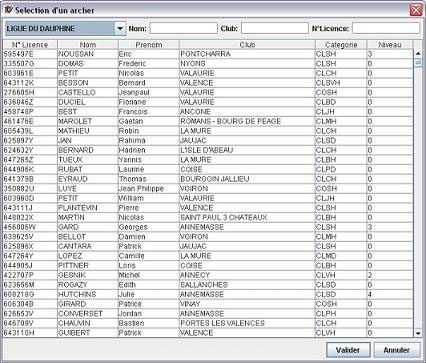
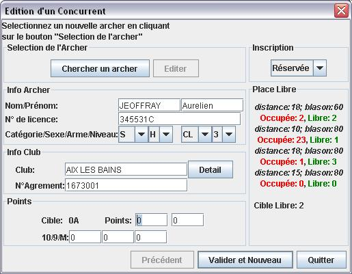

Dans l'onglet gestion des archers cliquez sur Ajouter, la boite de dialogue de création de concurrent va alors apparaître.
Cliquez alors sur Chercher un Archer afin de voir apparaître la liste des archers inscrit dans la base FFTA préalablement importé.

Sélectionnée l'archer voulu puis valider.
Le ou Les Archers sont alors créés et apparaissent en rouge dans la liste des archers
